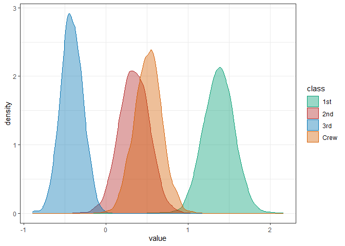

Overview
The faintr (FActorINTerpreteR) package provides convenience functions for interpreting brms model fits for data from factorial designs. It allows for the extraction and comparison of posterior draws for a given design cell, irrespective of the encoding scheme used in the model.
Currently, faintr provides the following functions:
-
get_cell_definitionsreturns information on the predictor variables and how they are encoded in the model. -
extract_cell_drawsreturns posterior draws and additional metadata for one subset of design cells. -
compare_groupsreturns summary statistics of comparing two subsets of design cells.
Installation
You can install the development version from GitHub with:
# install.packages("devtools")
devtools::install_github("michael-franke/faintr")Examples
In this section, we shortly introduce how to use the package. For a more detailed overview, please refer to the vignette.
We will use a preprocessed version of the mouse-tracking data set from the aida package:
data %>%
select(RT, group, condition, prototype_label) %>%
head()
#> # A tibble: 6 x 4
#> RT group condition prototype_label
#> <dbl> <chr> <chr> <fct>
#> 1 950 touch Atypical straight
#> 2 1251 touch Typical straight
#> 3 930 touch Atypical curved
#> 4 690 touch Atypical curved
#> 5 951 touch Typical CoM
#> 6 1079 touch Atypical CoMThe variables relevant for us are:
-
RT: Reaction time in milliseconds -
group: Whether a category is selected by click vs touch -
condition: Whether the animal is a typical vs atypical representative of its category -
prototype_label: The type of prototypical movement strategy (straight vs curved vs CoM)
Below, we regress the log-transformed reaction times as a function of factors group, condition, prototype_label, and their three-way interaction using a linear regression model fitted with brms:
To obtain information on the factors and the coding scheme used in the model, we can use get_cell_definitions:
get_cell_definitions(fit)
#> # A tibble: 12 x 16
#> cell group condition prototype_label Intercept grouptouch conditionTypical
#> <int> <chr> <chr> <fct> <dbl> <dbl> <dbl>
#> 1 1 touch Atypical straight 1 1 0
#> 2 2 touch Typical straight 1 1 1
#> 3 3 touch Atypical curved 1 1 0
#> 4 4 touch Typical CoM 1 1 1
#> 5 5 touch Atypical CoM 1 1 0
#> 6 6 touch Typical curved 1 1 1
#> 7 7 click Atypical straight 1 0 0
#> 8 8 click Typical straight 1 0 1
#> 9 9 click Typical curved 1 0 1
#> 10 10 click Atypical CoM 1 0 0
#> 11 11 click Typical CoM 1 0 1
#> 12 12 click Atypical curved 1 0 0
#> # ... with 9 more variables: prototype_labelcurved <dbl>,
#> # prototype_labelCoM <dbl>, `grouptouch:conditionTypical` <dbl>,
#> # `grouptouch:prototype_labelcurved` <dbl>,
#> # `grouptouch:prototype_labelCoM` <dbl>,
#> # `conditionTypical:prototype_labelcurved` <dbl>,
#> # `conditionTypical:prototype_labelCoM` <dbl>,
#> # `grouptouch:conditionTypical:prototype_labelcurved` <dbl>, ...The output shows that factors group, condition and prototype_label are dummy-coded, with click, Atypical, and straight being the reference levels, respectively.
To obtain posterior draws for a specific design cell, we can use extract_cell_draws. For instance, draws for typical exemplars in click trials, averaged over factor prototype_label, can be extracted like so:
extract_cell_draws(fit, condition == "Typical" & group == "click")
#> # A draws_df: 1000 iterations, 4 chains, and 1 variables
#> draws
#> 1 7.4
#> 2 7.4
#> 3 7.5
#> 4 7.5
#> 5 7.5
#> 6 7.4
#> 7 7.5
#> 8 7.4
#> 9 7.4
#> 10 7.5
#> # ... with 3990 more draws
#> # ... hidden reserved variables {'.chain', '.iteration', '.draw'}Parameter colname allows changing the default column name in the output, which facilitates post-processing of cell draws, e.g., for plotting or summary statistics. Here, we extract the draws for each level of prototype_label (averaged over group and condition) and visualize the results:
draws_straight <- extract_cell_draws(fit, prototype_label == "straight", colname = "straight")
draws_curved <- extract_cell_draws(fit, prototype_label == "curved", colname = "curved")
draws_CoM <- extract_cell_draws(fit, prototype_label == "CoM", colname = "CoM")
draws_prototype <- posterior::bind_draws(draws_straight, draws_curved, draws_CoM) %>%
pivot_longer(cols = posterior::variables(.), names_to = "prototype", values_to = "value")
draws_prototype %>%
ggplot(aes(x = value, color = prototype, fill = prototype)) +
geom_density(alpha = 0.4)
Finally, we can compare two subsets of design cells with compare_groups. Here, we compare the estimates for atypical exemplars in click trials against typical exemplars in click trials (averaged over the three prototypical movement strategies):
compare_groups(fit,
higher = condition == "Atypical" & group == "click",
lower = condition == "Typical" & group == "click"
)
#> Outcome of comparing groups:
#> * higher: condition == "Atypical" & group == "click"
#> * lower: condition == "Typical" & group == "click"
#> Mean 'higher - lower': 0.2215
#> 95% HDI: [ 0.1421 ; 0.2978 ]
#> P('higher - lower' > 0): 1
#> Posterior odds: InfIf one of two group specifications is left out, we compare against the grand mean:
compare_groups(fit,
higher = group == "click"
)
#> Outcome of comparing groups:
#> * higher: group == "click"
#> * lower: grand mean
#> Mean 'higher - lower': 0.1009
#> 95% HDI: [ 0.06956 ; 0.1302 ]
#> P('higher - lower' > 0): 1
#> Posterior odds: InfIf the Boolean flag include_bf is set to TRUE (default is FALSE), Bayes Factors for the inequality (higher > lower) are approximated in comparison to the “negated hypothesis” (lower <= higher). However, this requires specifying proper priors for all parameters:
fit_with_priors <- brms::brm(formula = log(RT) ~ group * condition * prototype_label,
prior = prior(student_t(1, 0, 3), class = "b"),
data = data,
seed = 123
)
compare_groups(fit_with_priors,
higher = prototype_label != "straight",
lower = prototype_label == "straight",
include_bf = TRUE
)
#> Outcome of comparing groups:
#> * higher: prototype_label != "straight"
#> * lower: prototype_label == "straight"
#> Mean 'higher - lower': 0.1062
#> 95% HDI: [ 0.05464 ; 0.1547 ]
#> P('higher - lower' > 0): 0.9998
#> Posterior odds: 3999
#> Bayes factor: 4208